· Life Leadership & Coaching ·
Non hai bisogno di cambiare vita. Devi smettere di vivere quella di qualcun altro.
Per chi ha già costruito qualcosa e sente che la struttura interna non regge più ciò che ha fuori. Imprenditori, professionisti, persone in transizione profonda. Niente motivazione, niente formule veloci — solo la pazienza dell'orefice e la freddezza del chirurgo.
La realtà non è una linea. È un campo.
Tu non devi forzarla. Devi sintonizzarti.
Tutto il resto di questo sito serve a insegnarti come.
· Genesi del logo ·
Una strana sincronicità dell'universo.
Il logo mi è stato consegnato così, già finito. Solo dopo averlo ricevuto ho realizzato che le sue tre forme — Visione · Equilibrio · Crescita — coincidono esattamente con il processo indispensabile per vivere una vita psicologica sana descritto da Roberto Assagioli nella Psicosintesi: vedere ciò che si è, integrare le parti, far emergere il Sé. Non l'ho cercato. È arrivato. E quando ho collegato i punti, ho capito che non era un marchio: era una mappa.
Costruito sulla proporzione del 7 — il numero che torna nei pilastri, nei chakra, nei pianeti antichi, nelle note.
Probabilmente sei arrivato qui così.
Hai costruito qualcosa che funziona — una carriera, un business, una relazione, una facciata — e dall'esterno non c'è niente da dire.
Dall'interno c'è una crepa che non chiude.
Hai già letto i libri. Hai provato la meditazione, il digiuno, la terapia, magari la psichedelica. Qualcuno ti ha promesso il salto di coscienza in sette giorni. Qualcun altro ti ha venduto un corso da diecimila euro e un attestato.
Niente di tutto questo è stato inutile. Niente di tutto questo è stato sufficiente.
Il motivo è semplice: nessuno ti ha insegnato a integrare. A tenere insieme la parte di te che legge Jung e la parte che firma contratti. La parte che cerca il Sé e la parte che deve pagare le bollette. La parte che sa e la parte che non riesce.
Io lavoro esattamente lì. Nel punto in cui le due metà si parlano.
Se sei arrivato fino a qui, la crepa è già una bocca che parla.
Scrivimi su WhatsAppDavil Di Claudio.
Civitavecchia, 1996 · Roma, oggi · Ricercatore della coscienza · Studioso di psicologia del profondo · Guida e mental coach
Hai costruito una vita che, dall'esterno, regge. Hai i numeri, i ruoli, le foto giuste. Eppure quando il rumore si spegne e resti solo con te stesso, una voce torna sempre uguale: non era questo. O forse lo era — ma non basta più.
Se ti riconosci in queste righe, fermati un attimo. La storia che sto per raccontarti è la mia, ma riguarda anche te. Te la racconto perché prima di sedermi al tavolo come coach, sono stato esattamente nel punto in cui forse ti trovi adesso — e conosco, dal di dentro, l'unico varco che porta fuori.
«Sono partito dalla fabbrica di Tarquinia, millecentocinquanta euro al mese in mezzo al rumore. Sono arrivato ai sei milioni di dollari fatturati a Dubai. Tra i due fuochi passa un centimetro: è il varco esatto dove oggi accompagno chi mi sceglie.»
Mondo ordinario. Sono nato il 14 marzo 1996 a Civitavecchia, da una madre di sedici anni e da un padre che è scomparso il giorno stesso. Sono cresciuto sotto il peso di un nome che non si pronunciava, con la dislessia che fa sembrare ottuso un bambino sveglio e il bullismo che ti chiude prima che impari ad aprirti. L'ordinarietà mi è stata negata fin dall'inizio — oggi so che è stata la prima delle benedizioni travestite.
Le prime perdite. A dieci anni se ne è andato l'amico più caro. A quattordici ho incontrato per la prima volta mio padre — e ho scoperto che certe attese non si chiudono: si trasformano. A diciotto vendevo gas porta a porta tra rifiuti e porte sbattute in faccia. A ventidue la fabbrica di tornitura a Tarquinia mi prendeva otto ore al giorno per millecentocinquanta euro al mese, in mezzo al rumore e a persone che parlavano solo di quanto la vita fosse storta. Era il bivio: restare e morire dentro, o rischiare tutto.
La soglia. A ventitré anni ho scelto la seconda. Niente paracadute, niente piano B: ho lasciato la fabbrica e mi sono giocato l'intera carta sull'unica cosa che avevo — la parola, la disciplina, una visione che ancora non sapevo di avere. Quando l'unico paracadute è il salto, impari a volare in fretta.
L'ascesa. In quattro anni ho costruito reti commerciali in tre continenti, sede a Dubai, tremila persone attive nel mio gruppo. Sei milioni di dollari fatturati in un anno. Una richiesta di matrimonio davanti a quindicimila persone in Colombia, alla donna che credevo dei miei sogni. Avevo vinto, secondo qualunque metro contemporaneo — eppure più la cifra cresceva, più dentro si svuotava qualcosa.
L'abisso. A ventisei anni la verità si è presentata con la nitidezza di una macchia di caffè su una camicia bianca: la donna a cui avevo chiesto di sposarmi davanti a quindicimila persone aveva detto sì sapendo che era no. Avevo percorso la china del successo sull'orlo di un baratro — un centimetro in più, sarei precipitato senza ritorno. È stato lì che, per la prima volta nella mia vita, ho chiesto aiuto.
Il ritorno e il maestro interno. Nella primavera del 2022 ho lasciato Dubai e sono tornato in Italia. Quattro anni di lavoro profondo: ipnosi regressiva, lavoro sciamanico, il perdono delle donne della mia vita — a partire da mia madre. Mi ci sono ritrovato nei pensieri di Jung, Assagioli e Zeland: non li ho cercati come maestri da venerare, mi ci sono riconosciuto. Erano lì già da tempo, come se descrivessero qualcosa che già conoscevo senza saperlo nominare.
Il corpo. Mi alleno tre volte alla settimana — corsa, nuoto, ciclismo. Non per estetica. Perché il pensiero che non passa per il corpo resta un'ipotesi. Condivido con Albert Einstein due dettagli che ho preso, con tutta l'umiltà del caso, come una piccola conferma che esistono fili invisibili: la stessa data di nascita — il 14 marzo — e lo stesso numero pitagorico del destino, il 33. Non per paragonarmi a un genio: certe sincronicità, quando le ascolti, ti orientano.
L'elisir. Ho scritto «Io posso farcela» e «PNL Esoterica» perché certe cose, se non si scrivono, si perdono. Studio anche ciò che le università non insegnano — alchimia interiore, archetipi attivi, leggi del campo. Non per posa esoterica: senza quel piano, metà di ciò che vedo in sessione non avrebbe spiegazione.
Lavoro a tempo pieno e con poche persone alla volta — per rispetto del tempo di tutti, mio e tuo. Sono un coach e, prima ancora, un compagno di cammino. Se ce l'ho fatta io, può farcela chiunque — sicuro come il sole.
— Davil
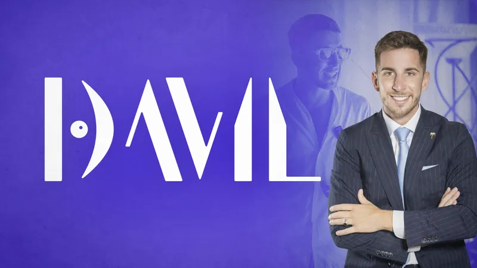
Non motivazione. Ingegneria della coscienza.
Ogni percorso che guido si muove su tre assi simultanei. Saltarne uno significa costruire su sabbia.
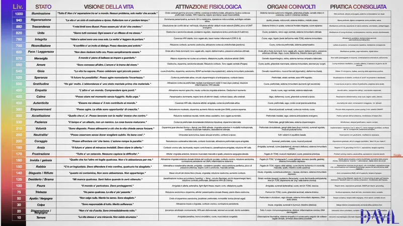
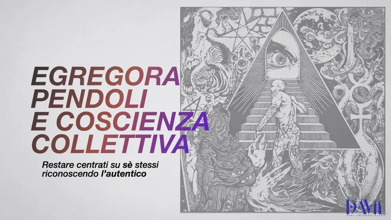
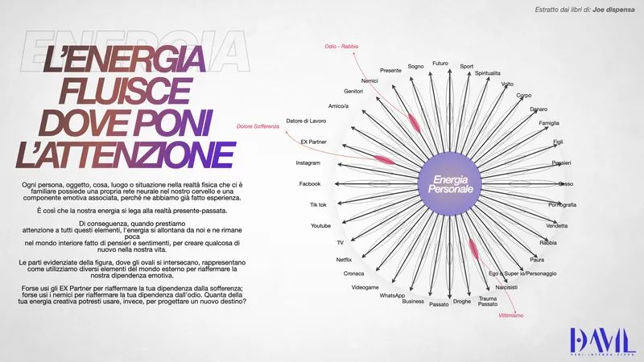
La Ruota della Vita
Il primo strumento di diagnosi che apriamo insieme. Quattordici aree della tua vita, valutate con calma e senza giudizio. Non per misurarti — per fotografare, in trenta minuti, dove la ruota sta perdendo aria. Da qui parte, con dolcezza e metodo, il piano operativo dei tre assi.
Trentasette trilioni di cellule. Un'unica orchestra.
Non sei un solo soggetto. Sei un network interconnesso di organi, sistemi, microbioti, neuroni, ormoni, fasce, fluidi, archetipi e abitudini. Ogni cellula ascolta le altre. Ogni pensiero che ripeti diventa biologia.
Il lavoro che faccio non è "cambiare la mente". È far performare in armonia e sinergia tutte le parti di te — quelle che vedi e quelle che ti vivono dentro senza nome. Quando l'orchestra suona allineata, non devi più convincere la realtà di niente.
Quattro tradizioni. Un unico linguaggio operativo.
Non mischio le fonti per snobismo culturale. Le mischio perché, sul tavolo operativo di un percorso reale, ognuna di loro risolve qualcosa che le altre non vedono.
Psicosintesi — Roberto Assagioli
Non sei una cosa sola. E questo è il punto di partenza. Psichiatra veneziano, contemporaneo e poi critico di Freud: la sua mappa della psiche — l'ovoide, le subpersonalità, l'Io come centro di coscienza e volontà, il Sé transpersonale — dopo cent'anni regge ancora ogni prova clinica.
Nel mio metodo è lo strumento di lavoro quotidiano: così trasformiamo conflitti endopsichici in energia, disidentifichiamo il pensiero compulsivo, ricostruiamo un atto di volontà che non sia muscolo teso ma direzione chiara.
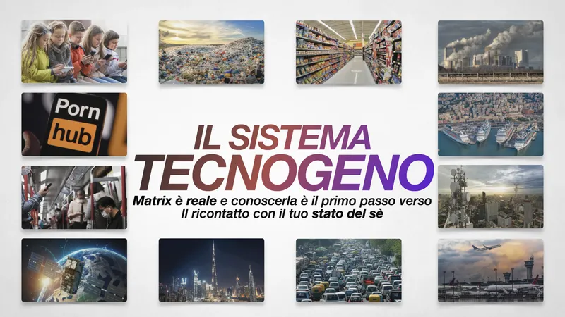
Transurfing — Vadim Zeland
La vita non si cambia. Si sceglie. Ventitré libri in ventun anni, un'unica intuizione: la realtà non è una linea, è un campo — lo spazio delle varianti — e tu non la costruisci, la selezioni.
Tre leggi pratiche che uso con ogni cliente: ciò a cui dai troppa importanza lo perdi; i pendoli (ideologie, social, gruppi, paure ereditate) si nutrono della tua attenzione; lo specchio della realtà non anticipa — riflette dopo.
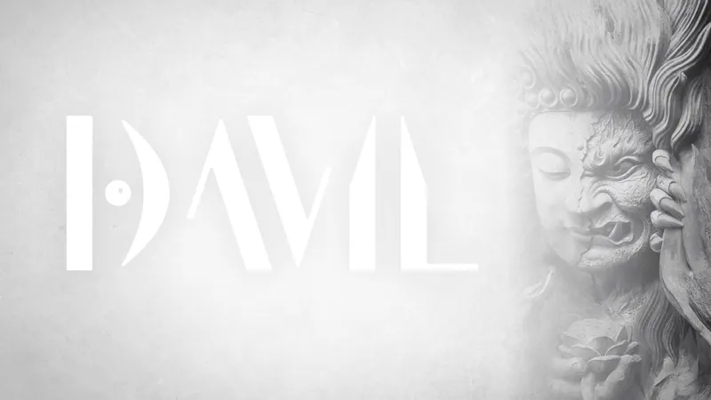
PNL Esoterica — il metodo integrato
Programmare il magico chaos del mondo con le parole e non solo. È il titolo del mio secondo libro e la mia sintesi personale. La PNL classica è potente ma cieca sul livello archetipico. L'esoterismo è profondo ma scivoloso sul piano operativo.
Il mio lavoro: far dialogare i due piani. La parola come tecnologia psichica da un lato, gli archetipi come diagnostica dall'altro — Arconti, Eggregore, Pendoli, Guardiano della Soglia.
Leggi universali — risonanza, karma, vibrazione
Legge della Risonanza, del Riflesso, del Vuoto, della Compensazione, di Causa-Effetto, della Vibrazione, del Karma, dell'Amore, della Conoscenza. Non sono dogmi. Sono regolarità osservabili.
Bruce Lipton ha mostrato che le credenze modulano l'espressione genetica più della genetica stessa (epigenetica). Joe Dispenza ha documentato con EEG, HRV e risonanza magnetica funzionale come la meditazione ripetuta produca cambiamenti cerebrali misurabili in settimane. Quello che le tradizioni dicono da millenni — ciò che pensi diventa carne — la biologia lo sta semplicemente confermando.
Non lavoro con tutti. Con intenzione.
Per chi lavoro
- Imprenditori e professionisti che hanno costruito qualcosa e sentono che il costo interno sta superando il rendimento esterno.
- Persone in transizione profonda: separazione, lutto, crollo di identità, risveglio spirituale non richiesto.
- Leader di rete, manager, creator con responsabilità su altri, che sentono di non reggersi più su sé stessi.
- Chi ha già fatto terapia, ha capito molte cose, e vuole passare dalla comprensione alla trasformazione.
- Chi ha letto Jung, Assagioli o Zeland e vuole qualcuno con cui farci qualcosa.
Per chi non lavoro
- Chi cerca motivazione, hype, quote da mettere su Instagram.
- Chi vuole un guru che decida per lui.
- Chi non è disposto a rivedere la propria storia familiare.
- Chi crede che tre sessioni bastino a cambiare quindici anni di copioni.
- Chi cerca risultati senza esporsi, certezze senza verità.
Ti sei riconosciuto nella prima colonna? È il momento di muoversi.
Apriamo un canale direttoPercorsi su misura per chi è pronto.
-
01
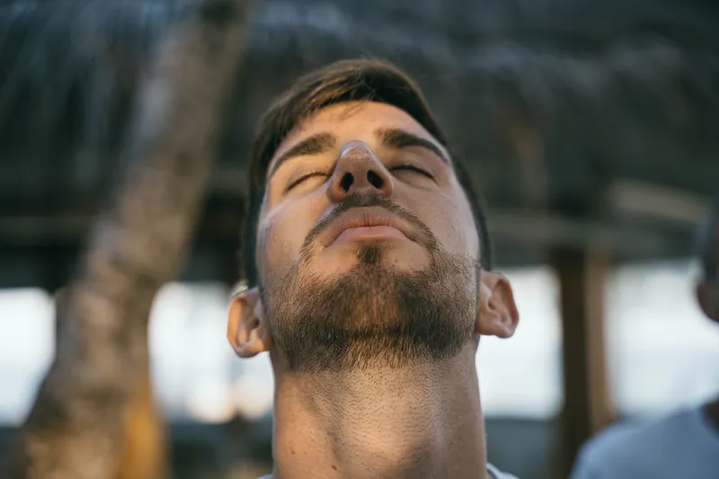
Sessione di Esplorazione
Un primo incontro gratuito di trenta minuti per capire se c'è terreno comune. Nessun pitch. Nessuna vendita obbligata. Solo onestà e chiarezza. Alla fine ti dico cosa farei se fossi al tuo posto — anche se significa non lavorare insieme.
-
02
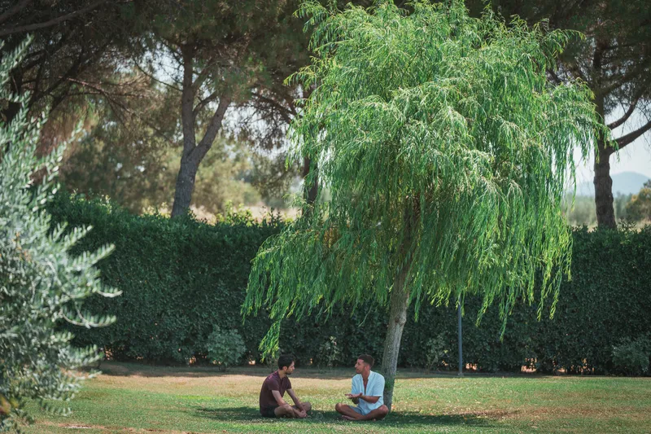
1:1 Leadership Coaching
Un percorso individuale a ciclo trimestrale. Sessioni settimanali per riallineare visione, energia e azione. Dodici settimane sono il tempo minimo perché qualcosa cambi davvero nei circuiti neurali, nelle abitudini, nel campo che emani.
Sessione zero di analisi · 12 sessioni settimanali da 60-75 min · protocollo operativo rivisto ogni 30 giorni · canale diretto fra le sessioni. -
03
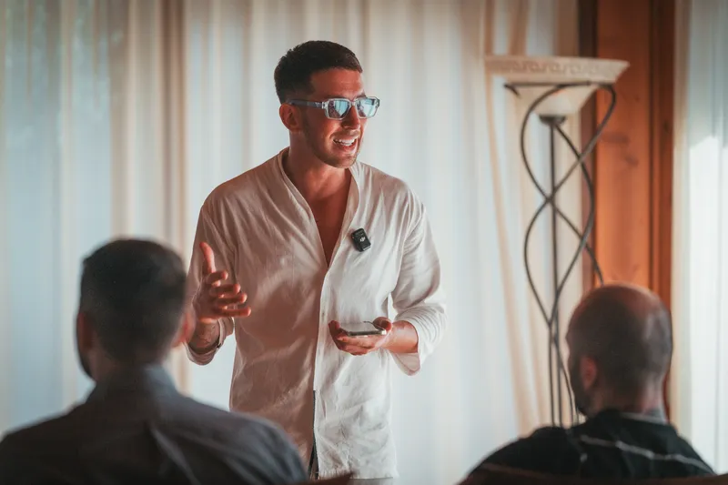
Mentoring per chi parte da zero
Dedicato a chi vuole costruire un business proprio partendo da zero — imprenditori digitali, consulenti, freelance, professionisti in transizione. Posizionamento, disciplina interiore, gestione dell'energia, strategia di lungo termine. La mia scalata nel network marketing — fino a oltre 500.000 € di guadagni in pochi anni, partendo dalla tuta da meccanico — è il trampolino di lancio che porto in sessione: ti consegno la stessa struttura mentale e operativa che mi ha permesso di salire dalla porta a porta ai sei milioni di dollari fatturati. Non un caso fortunato. Un protocollo replicabile.
Positioning e voce di brand · ritmi e disciplina atletica applicati al business · gestione energetica della rete · strategia medio-lungo termine senza hype. -
04
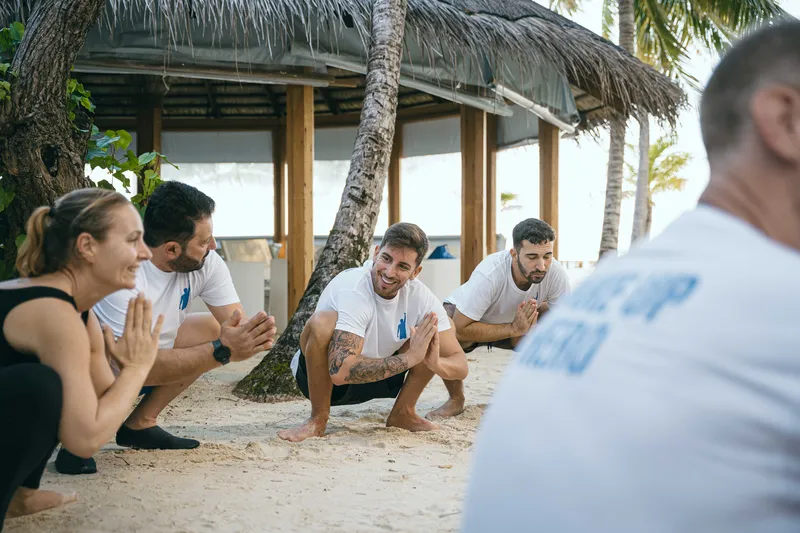
Percorsi Evolutivi di Gruppo
Laboratori esperienziali dove il cambiamento è moltiplicato dal campo del gruppo. Teoria, pratica meditativa e strumenti di integrazione quotidiana. Piccoli numeri per garantire profondità: massimo otto persone per ciclo.
Cicli intensivi (weekend + follow-up online) con materiali scritti, esercizi guidati e gruppo privato di integrazione.
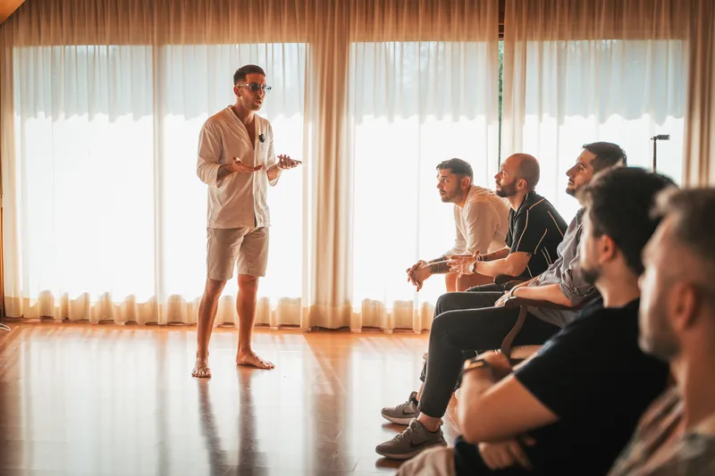
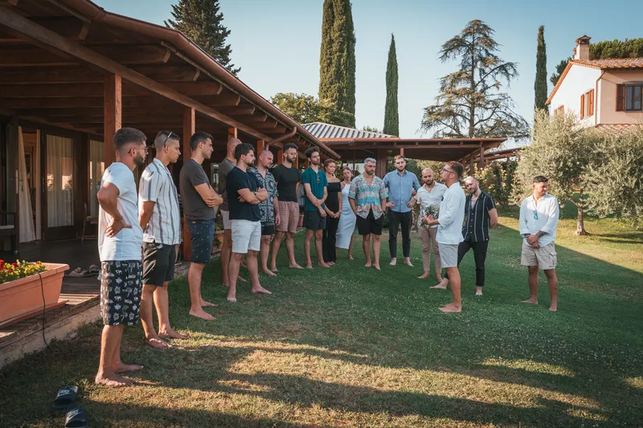
Hai visto il percorso che fa per te? Iniziamo dalla sessione di esplorazione gratuita.
Prenota la prima sessioneSmettere è l'ultimo passo, non il primo.
Fumo. Alcol. Droghe leggere e pesanti. Porno. Slot machine. Lo smartphone che controlli quaranta volte all'ora. I social che apri appena ti svegli, prima ancora di guardare in faccia tua moglie o tuo figlio.
Le chiamano dipendenze. Sono molto di più: sono pendoli energetici che si nutrono della tua attenzione e ti restituiscono una microdose di sollievo per non sentire ciò che dovresti sentire.
Ho attraversato in prima persona il meccanismo della dipendenza — so di cosa parlo dal di dentro, non dal manuale. È proprio perché conosco la dinamica dalla radice che posso guidarti fuori.
Le diete, gli sforzi di volontà, le app di meditazione e perfino la psicoterapia spesso falliscono con le dipendenze per una ragione sola: lavorano sul sintomo, non sulla chimica del campo.
Bruce Lipton la chiama programmazione subconscia. Joe Dispenza la chiama l'abitudine di essere te stesso. I nomi cambiano. Il meccanismo no.
Lavoro specificamente su
- Fumo — sigarette, tabacco sciolto, vape
- Alcol — uso ricorrente, anche "sociale"
- Droghe — cannabis, cocaina, MDMA, ketamina
- Porno e masturbazione compulsiva — perdita di funzionalità relazionale
- Smartphone e social media — scroll compulsivo, FOMO cronica
- Gioco d'azzardo e trading compulsivo
- Zucchero e food compulsion — dinamiche sovrapponibili a quelle di una sostanza
Quando indirizzo altrove: se la tua dipendenza è in fase acuta e richiede detossificazione medica (alcolismo avanzato, oppioidi, benzodiazepine senza supervisione), non lavoro da solo. Ti indirizzo a un servizio specialistico e, se vuoi, ti accompagno in parallelo sul piano psicologico ed energetico.
Percorso individuale di 90 giorni
Sessioni settimanali 1-a-1 in video · check-in giornaliero nelle prime due settimane · protocollo operativo personalizzato.
È il blocco più intenso che offro. Non è per chiunque. È per chi ha deciso.
Da dove sono partito.
«Da un punto di partenza che non promette nulla, ho costruito una vita che non avrei osato immaginare. Lo dico per una sola ragione: se l'ho fatto io, può farcela chiunque.»
-
CAPITOLO I
Civitavecchia · le radici
Sono nato nel 1996 in una famiglia semplice, in un contesto dove poco era dato e tutto andava conquistato. Ho imparato molto presto il valore del lavoro, della parola e della responsabilità personale. Da quel terreno è cresciuta la mia disciplina: niente di ciò che ho costruito poi è arrivato per caso.
-
CAPITOLO II
La fabbrica · la prima scuola di umiltà
Diploma da perito meccanico, poi cinque anni in fabbrica a Tarquinia. È lì che ho conosciuto la fatica vera, la routine, e ho capito che non ero fatto per restare fermo. Quando si è aperta la porta delle vendite porta a porta — luce e gas — l'ho varcata senza esitare. Ho scoperto due cose che mi hanno cambiato la vita: so stare con le persone e so reggere il no per arrivare al sì.
-
CAPITOLO III
Dubai · costruire da zero, in grande
Network manager, trasferimento a Dubai, una rete commerciale di tremila persone attive in tre continenti. Sei milioni di dollari fatturati in un anno. Non è stato un colpo di fortuna: è stato anni di studio, viaggi, formazioni, notti senza dormire e una visione tenuta ferma anche quando intorno crollava tutto. Ho scoperto che l'abbondanza si costruisce — pezzo per pezzo, scelta per scelta — non si aspetta.
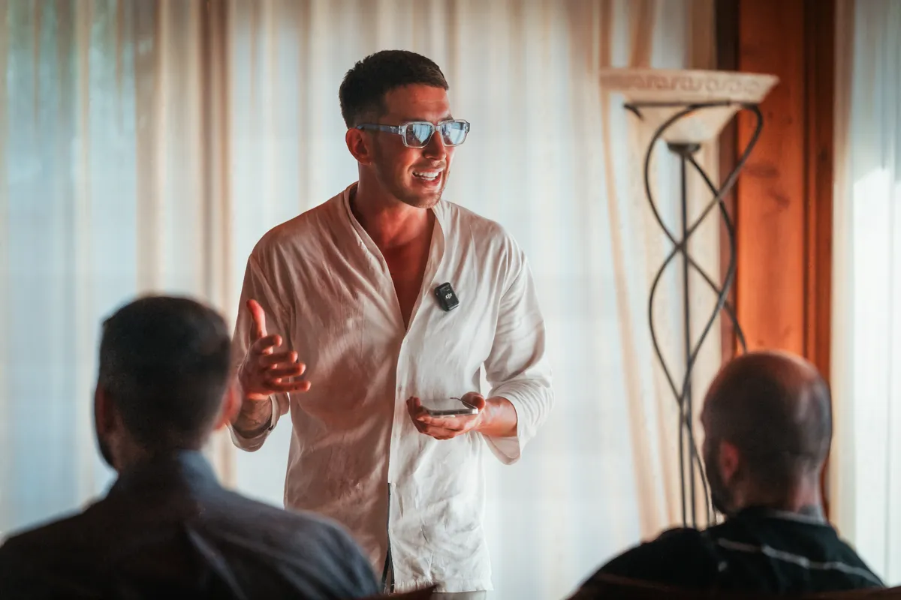
-
CAPITOLO IV
Il passaggio · dalla forma alla sostanza
Arrivato in cima a quella montagna ho capito che mi serviva un'altra montagna: quella interiore. Sono tornato in Italia con una scelta precisa — spostare il successo dal fuori al dentro. Quattro anni di studio profondo: psicosintesi, transurfing, archetipi, neuroscienze, alchimia interiore. Non ho rinnegato il percorso precedente: l'ho integrato. Le competenze imprenditoriali si sono fuse con quelle introspettive, e da quella fusione è nato il metodo che oggi porto in sessione.
-
CAPITOLO V
Oggi · al servizio di chi vuole davvero
Oggi accompagno persone — imprenditori, professionisti, ricercatori — a costruire una vita all'altezza del loro potenziale. Studio psicologia in formazione accademica, scrivo libri, lavoro 1:1 con poche persone alla volta perché la qualità lo richiede. Sono partito da un punto in cui nulla era promesso e ho costruito una vita libera, dignitosa, abbondante. Se l'ho fatto io, può farcela chiunque — con il metodo giusto e la decisione di non tradirsi più.
Se questa storia ti ha toccato qualcosa, non è un caso.
Voglio iniziare il camminoDue libri. Due lati della stessa medaglia.
Io posso farcela
Il viaggio dell'anima raccontato senza filtri — Civitavecchia, la fabbrica, Dubai, la trasformazione, il ritorno. Le leggi universali lette non come dogmi ma come ciò che ho dovuto imparare nella carne per tornare in superficie.
Per chi ha bisogno di una storia vera prima di fidarsi di una tecnica.
PNL Esoterica
Un intreccio di psicologia clinica, neuroscienze, gnosi antica, alchimia interiore, Transurfing e linguistica operativa. Scritto per il ricercatore serio — quello che vuole capire come funziona davvero la macchina.
Per chi ha già letto Jung, Assagioli, Zeland e vuole vederli lavorare insieme.
Inizia a lavorare prima ancora di parlare con me.
Tre strumenti pensati per darti valore reale da subito. Non anticipazioni, non teaser: cose che puoi usare, leggere, praticare, da oggi pomeriggio.
Ars Realis
Community italiana indipendente di studio sistematico del Reality Transurfing di Vadim Zeland. Non un gruppo Telegram di motivazione. Un laboratorio operativo dove i concetti — pendoli, spazio delle varianti, intenzione esterna, importanza interna ed esterna, slide, immagine target — vengono messi a terra con esercizi, casi reali e debrief.
Pensata per chi ha già letto Zeland e vuole smettere di reinventare la ruota: protocollo settimanale, peer-review tra praticanti, glossario coerente, archivio domande. Russofoni nativi e traduzioni rigorose: niente storpiature da catena di Sant'Antonio.
- 52 settimane di percorso strutturato — un tema a settimana
- Tecniche a livelli — Base, Tecniche, Avanzate, Era Tafti
- Glossario completo con originali russi e note etimologiche
- Diario personale privato per tracciare slide e varianti
- Casi pratici condivisi · debrief mensili sui risultati
- Community indipendente — niente lignaggi, niente guru, niente quote
Lasci la mail, ricevi la password. La community è gratuita e resta gratuita.
Interprete dei Sogni
Racconta un sogno. Ricevi una lettura stratificata — riformulazione del materiale onirico, mappa dei simboli, archetipi attivati, lettura compensatoria e prospettica, domande riflessive per il diario — costruita su un corpus rigoroso: Jung, Hillman, Neumann per la base junghiana; Johnson, von Franz, Bosnak, Aizenstat, Taylor per i metodi contemporanei (Active Imagination, Embodied Dreamwork, Dream Tending); Hobson e Solms per la cornice neuroscientifica.
- Lettura su 5 livelli — letterale, soggettivo, oggettivo, archetipico, prospettico
- Mappa dei simboli con riferimenti ai testi originali
- Domande di lavoro per portare il sogno nel diario
- Cornice neuroscientifica · REM, consolidamento mnestico, default mode network
- Privacy totale · API key Anthropic locale, sogno mai registrato
Per un lavoro profondo considera un analista o un coaching dedicato. Questo tool apre la porta. Non è la casa.
Apri l'Interprete dei SogniPsicosintesi + Transurfing
«Psicoenergetica · Il Pensiero della Sintesi» — il pensiero completo di Roberto Assagioli, integrato dal lavoro di Viglienghi e Bartoli. «Il Transurfing della Realtà» — il manuale operativo di Vadim Zeland.
Questi PDF non sono le opere originali ma compendi riassuntivi realizzati con modelli avanzati di intelligenza artificiale, a partire dalle migliori fonti pubbliche e ufficiali.
- 2 PDF integrali · oltre 600 pagine di studio
- Pronti al download dopo l'iscrizione
- Per chi vuole costruire una base solida prima di iniziare un percorso
Sono i due testi che, secondo me, vanno letti insieme: uno descrive la struttura interna, l'altro la dinamica esterna. Lasci nome e mail per riceverli — niente carta, niente vincoli.
Due pillole di saggezza antica complementare
Queste tre risorse non sono esche. Sono il filtro: se ti sono utili, stiamo probabilmente cercando la stessa cosa. Se non ti toccano niente, significa che il mio percorso non fa per te — ed è perfetto così.
Due ore di Transurfing in regalo.
Una masterclass completa sul Reality Transurfing di Vadim Zeland — pendoli, spazio delle varianti, intenzione esterna, importanza, slide. Niente teaser, niente ritagli: due ore intere, registrate per chi vuole capire davvero come funziona il modello. Con supporto audio vocali, video lezioni e PDF workbook — tre canali per consolidare davvero ciò che impari.
In cambio: la tua email e il tuo numero. Ti mandiamo il link diretto nelle ore successive alla richiesta e — se serve — possiamo risponderti via WhatsApp. Niente spam, niente liste vendute.
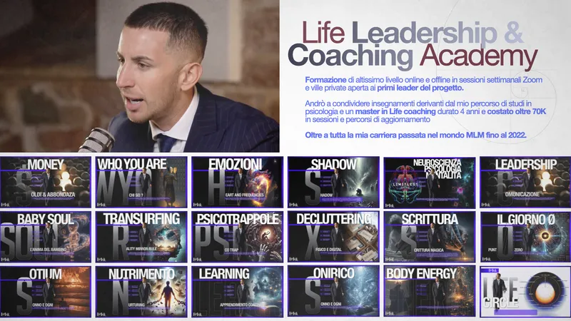
Compila il form. Il video apparirà qui sotto e riceverai il link via email nelle ore successive alla richiesta.
Sei un caso più complesso? Inizia da un test.
Se senti che il tuo nodo è particolare — dipendenze, trauma, transizione profonda, blocchi cronici — non parto da zero. Compili un breve test online di valutazione e io leggo il quadro prima della prima call. Niente generalismi, niente perdite di tempo.
Test di pre-valutazione
15-20 minuti. Domande su storia personale, area di lavoro, intensità del problema, eventuali percorsi precedenti. Le tue risposte arrivano direttamente a me — riservate, leggibili solo da Davil.
Compila il test →Domande che tornano.
Sei un terapeuta?
Questo "Transurfing" è un'altra roba new-age?
Quanto dura un percorso?
Lavori solo a Roma o anche online?
Che garanzie dai?
Ho già fatto terapia. A cosa mi serve un coach?
Posso liberarmi dal fumo/alcol/porno/smartphone davvero in 90 giorni?
Ho già provato con uno psicologo / un centro per le dipendenze. Perché dovrebbe funzionare con te?
Cos'è Ars Realis e come ci si iscrive?
Devo credere a Jung o al Transurfing per lavorare con te?
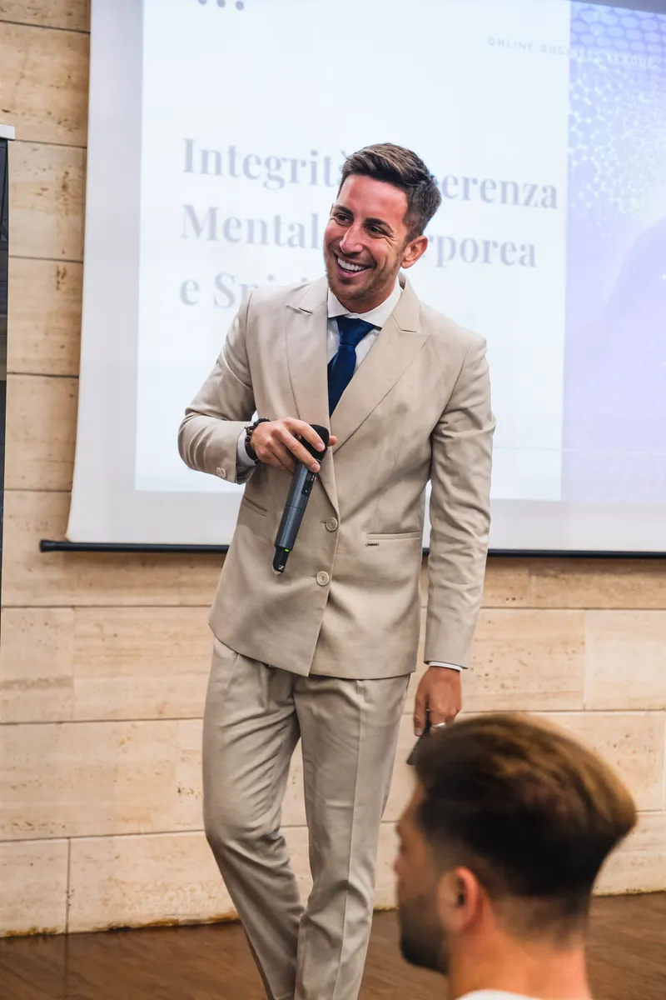
Se sei arrivato fin qui, una parte di te ha già deciso.
L'altra vuole solo essere rassicurata. Prenota una chiamata. È gratis. Dura trenta minuti. Decidi dopo.
Prenota la chiamata conoscitivaDove mi trovi.
Roma, Italia · 70% dei percorsi 1:1 online · Aziende e team: in tutta Italia
· Trasparenza professionale ·
Cosa sono e cosa non sono.
Sono un studente di psicologia in formazione accademica, non ancora laureato. Ho completato percorsi di mental coaching ad alto livello con i migliori formatori in Italia, tra cui Gianluca Liguori, e studio quotidianamente la Psicosintesi di Assagioli, il Reality Transurfing di Zeland, l'archetipica junghiana e le neuroscienze del comportamento.
Non sono uno psicologo clinico, non sono uno psicoterapeuta, non sono un medico. Non diagnostico patologie, non prescrivo farmaci, non curo disturbi psicopatologici. Il mio lavoro è il mental coaching e l'accompagnamento evolutivo: lavoro su persone sane che vogliono evolvere, non su quadri clinici acuti.
Se stai vivendo un disturbo psicologico, una crisi acuta, ideazione suicidaria, dipendenza grave, sintomi psichiatrici o altre condizioni di natura medica o patologica — il mio percorso non fa per te. Rivolgiti a uno psicologo, psichiatra, medico di base o ai servizi di emergenza (118 · Telefono Amico 02 2327 2327).
Quando in sessione emergono segnali che richiedono un intervento clinico, te lo dico chiaramente e ti indirizzo a professionisti qualificati con cui collaboro.